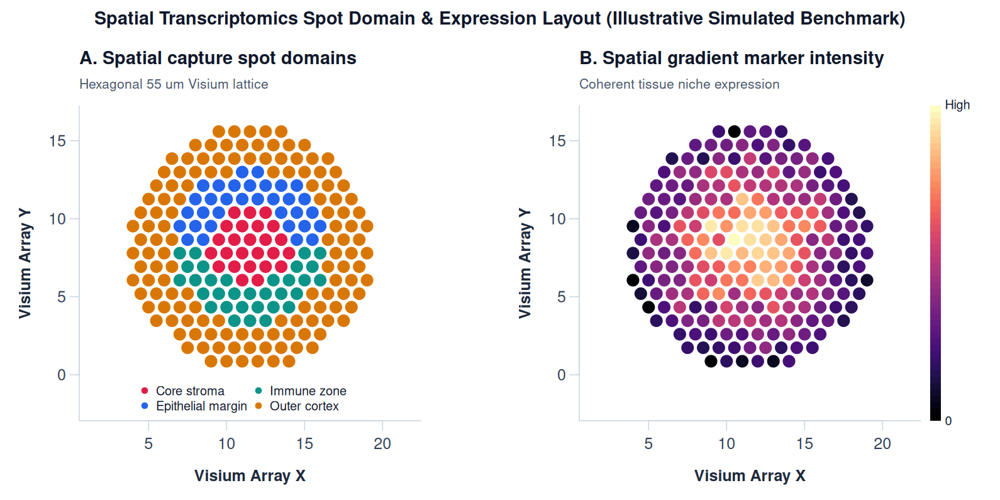

Spatial Transcriptomics in R and Python: Visium
Nasir Mahmood Abbasi, PhD
Bioinformatics Educator

Dissociating tissue for single-cell RNA-seq erases where cells sat relative to one another. Spatial transcriptomics preserves tissue coordinates alongside gene counts, letting you load a 10x Visium dataset in R (Seurat) or Python (Squidpy and Scanpy), overlay quality metrics and marker genes onto the histology image, and test whether transcriptional clusters match real anatomy.
Format: Advanced template. Work through one shared public Visium dataset (V1_Adult_Mouse_Brain) in R or Python. Steps 1-3 follow the baseline matrix and spatial assets tested on Ubuntu; Step 4 and the QC/resolution checks extend that baseline using documented Seurat v5 and Squidpy APIs.
What problem this solves: Unaligned coordinates, aggressive flat UMI filtering, and expression-only clustering can hide real histology or turn multi-cell capture spots into misleading "cell types." This walkthrough pairs spot counts, histology pixels, QC covariates, and spatial statistics in one reproducible sequence.
What you will be able to do:
- Stage a conventional Visium dataset (
filtered_feature_bc_matrix.h5plusspatial/) and handle Space Ranger v1 versus v2+ coordinate files. - Compute spot-level QC metrics (
nCount_Spatial,nFeature_Spatial, and mitochondrial fraction) before normalization without erasing low-UMI anatomical compartments such as white matter. - Plot QC covariates and marker genes directly over H&E tissue images and diagnose coordinate-scaling mismatches.
- Run PCA, inspect variance explained and clustering resolution sensitivity, and compute Moran's I spatial autocorrelation and neighborhood enrichment.
- Choose resolution-appropriate downstream tools across Visium v1/v2, Visium HD, and targeted imaging platforms (Xenium, CosMx, MERFISH).
Prerequisites & time: About 45-60 minutes. Assumes introductory R or Python, basic shell navigation (Command Line Part 1), and familiarity with single-cell normalization and clustering (scRNA-seq Basics).
Scope: Both language branches target conventional Visium v1/v2 outputs containing filtered_feature_bc_matrix.h5 and a sibling spatial/ folder (for your own Space Ranger run, point both readers at outs/). Section 5 covers how the workflow changes for Visium HD binning, cell-type deconvolution, and subcellular imaging.
How Visium links gene counts to tissue pixels
Three Space Ranger outputs must agree before any spatial plot makes sense. A spot barcode identifies one 55 micrometre capture spot on the slide (spaced ~100 micrometres center-to-center, typically capturing 1-10+ cells). The H5 matrix stores UMI counts per barcode, the positions CSV maps each barcode to full-resolution microscope pixel coordinates (pxl_row_in_fullres, pxl_col_in_fullres), and scalefactors_json.json rescales those coordinates to match the downsampled PNG histology images.

Prepare one public sample for both languages
Why stage the data with checksums first: a truncated H5 matrix or missing scale-factor JSON causes cryptic reader errors later. Download the Python input preparer into a fresh project directory and run it with Python 3.10+ (no R or Squidpy needed yet). It fetches about 30 MB from 10x Genomics, verifies recorded SHA256 fingerprints, retries with byte-range requests if HTTP 403 or a transient network error occurs, and refuses to overwrite an existing folder.
python3 prepare_inputs.py --output data/visium/V1_Adult_Mouse_Brain
data/visium/V1_Adult_Mouse_Brain/
filtered_feature_bc_matrix.h5
source-manifest.json
spatial/
tissue_positions_list.csv
scalefactors_json.json
tissue_lowres_image.png
tissue_hires_image.png
Space Ranger v1 vs v2+ layout: this Space Ranger 1.1.0 sample stores coordinates in spatial/tissue_positions_list.csv without a header row. Space Ranger v2.0+ (including CytAssist Visium) renames that file to spatial/tissue_positions.csv and adds a header row (barcode,in_tissue,array_row,array_col,pxl_row_in_fullres,pxl_col_in_fullres), documented in the Space Ranger spatial outputs guide. Current Seurat v5 and Squidpy detect both formats; older package releases fail on v2+ unless updated.
Verified boundary: checksum verification, archive staging, and loading all 2,702 spots and 32,285 features succeeded end to end in both R and Python on Ubuntu (source digests, run notes). Always record installed versions before running (python -c "import scanpy,squidpy; print(scanpy.__version__, squidpy.__version__)" or R -q -e 'sessionInfo()').
1. Load the Visium library, compute spot QC, and normalize
Compute spot-level QC metrics on the raw counts before normalization so nCount_Spatial / total_counts (total UMIs per spot), nFeature_Spatial / n_genes_by_counts (detected genes per spot), and mitochondrial transcript percentage (^mt- in mouse, ^MT- in human) reflect true capture depth and tissue preservation. R uses SCTransform (regularized negative binomial Pearson residuals), whereas Python uses library-size normalization plus log1p and 2,000 highly variable genes (HVGs). These are two valid variance-stabilization choices rather than numerically identical transformations.
R: Seurat
The H5 reader requires hdf5r in the active R library (install.packages("hdf5r"); on Ubuntu source installs, libhdf5-dev and a C/C++ build toolchain are also required). Installing the optional Bioconductor package glmGamPoi speeds up SCTransform substantially.
library(Seurat)
library(ggplot2)
if (!requireNamespace("hdf5r", quietly = TRUE)) stop("Install hdf5r to read the H5 matrix.")
shared_input <- "data/visium/V1_Adult_Mouse_Brain"
spatial_data <- Load10X_Spatial(data.dir = shared_input, filename = "filtered_feature_bc_matrix.h5")
# Compute mitochondrial fraction on raw counts (mouse uses lowercase "^mt-"; human uses "^MT-").
spatial_data[["percent.mt"]] <- PercentageFeatureSet(spatial_data, pattern = "^mt-")
print(dim(spatial_data))
print(summary(spatial_data$nCount_Spatial))
spatial_data <- SCTransform(spatial_data, assay = "Spatial", verbose = FALSE)
Without glmGamPoi, SCTransform falls back to a slower native R fit and can take several minutes on this 2,702-spot library; let it finish rather than interrupting mid-fit. Confirm Images(spatial_data) returns "slice1" before plotting.
Python: Squidpy
import scanpy as sc
import squidpy as sq
shared_input = "data/visium/V1_Adult_Mouse_Brain"
adata = sq.read.visium(shared_input, counts_file="filtered_feature_bc_matrix.h5")
adata.var_names_make_unique()
# Flag mitochondrial genes on raw counts before normalization (use "MT-" for human).
adata.var["mt"] = adata.var_names.str.startswith("mt-")
sc.pp.calculate_qc_metrics(adata, qc_vars=["mt"], inplace=True)
print(adata)
# Preserve raw counts in a layer before normalizing for clustering and marker plots.
adata.layers["counts"] = adata.X.copy()
sc.pp.normalize_total(adata, inplace=True)
sc.pp.log1p(adata)
sc.pp.highly_variable_genes(adata, flavor="seurat", n_top_genes=2000)
For newer scverse pipelines and Visium HD, SpatialData and spatialdata_io.visium provide the Zarr-backed container superseding legacy readers, while sq.read.visium remains convenient for conventional Visium AnnData workflows. After loading, check that your object dimensions and spatial slots match this expected layout:
# Example output (illustrative summary matching the 2,702-spot, 32,285-feature matrix)
# R: dim(spatial_data) -> 32285 features, 2702 samples (spots); Images(spatial_data) -> "slice1"
# Python: AnnData object with n_obs x n_vars = 2702 x 32285
# obs: 'in_tissue', 'array_row', 'array_col', 'n_genes_by_counts', 'total_counts', 'pct_counts_mt'
# var: 'gene_ids', 'feature_types', 'genome', 'mt', 'highly_variable'
# uns: 'spatial'
# obsm: 'spatial'
2. Plot QC metrics and marker genes against tissue context
Inspecting library size and mitochondrial percentage spatially alongside canonical anatomical markers answers two questions at once: whether spots align cleanly over the H&E tissue section, and whether low-UMI spots represent damaged tissue or normal low-RNA histology. Here Snap25 marks neuron-rich gray matter and hippocampus, while Mbp marks myelinated white matter.
R
SpatialFeaturePlot(
spatial_data,
features = c("nCount_Spatial", "percent.mt", "Snap25", "Mbp"),
ncol = 2
) & theme(legend.position = "right")
The returned R figure combines four panels with patchwork. Its & operator applies the legend theme to every panel; using + only styles the last panel and can leave earlier QC colorbars cramped.
Python
sq.pl.spatial_scatter(
adata,
color=["total_counts", "pct_counts_mt", "Snap25", "Mbp"],
ncols=2,
img_alpha=0.5,
cmap="magma",
)
What you should see: spots should sit squarely inside the coronal mouse-brain H&E boundary, with high Snap25 across the cerebral cortex and hippocampal pyramidal layer and high Mbp tracing the corpus callosum and white-matter tracts. Squidpy's spatial_scatter replaces the deprecated sc.pl.spatial function.
Why flat UMI filtering fails in spatial data: in mouse brain, myelinated white matter (high Mbp) carries 3-5x fewer UMIs per spot than neuron-dense hippocampal layers (high Snap25). In solid tumours, collagen-rich stroma similarly shows much lower UMI counts than dense epithelial tumour nests. Applying a rigid global minimum-UMI cutoff without checking tissue overlays deletes intact anatomical compartments rather than technical noise.
3. Reduce dimensions, cluster expression profiles, and check resolution sensitivity
PCA compresses the 2,000 highly variable genes into orthogonal axes of co-variation. Before clustering, inspect the variance-explained curve (elbow plot) to check how many PCs capture structured signal rather than noise, then test at least two clustering resolutions with fixed random seeds. Because graph clustering groups spots by transcriptional similarity alone without using spot coordinates, verify whether clusters correspond to coherent anatomical regions or simply track sequencing depth (nCount_Spatial / total_counts).
R: Seurat
spatial_data <- RunPCA(spatial_data, assay = "SCT", verbose = FALSE)
ElbowPlot(spatial_data, ndims = 40)
spatial_data <- FindNeighbors(spatial_data, reduction = "pca", dims = 1:30)
spatial_data <- FindClusters(spatial_data, resolution = c(0.4, 0.8), random.seed = 42, verbose = FALSE)
SpatialDimPlot(
spatial_data,
group.by = c("SCT_snn_res.0.4", "SCT_snn_res.0.8"),
label = TRUE,
label.size = 3
)
Python: Scanpy
sc.pp.pca(adata, mask_var="highly_variable")
sc.pl.pca_variance_ratio(adata, n_pcs=40)
sc.pp.neighbors(adata, n_pcs=30)
# Scanpy 1.10+ transitions Leiden to the igraph backend (pass flavor="leidenalg" only for legacy runs).
for res, key in [(0.5, "clusters_05"), (0.8, "clusters_08")]:
sc.tl.leiden(
adata,
resolution=res,
flavor="igraph",
n_iterations=2,
directed=False,
random_state=0,
key_added=key,
)
sq.pl.spatial_scatter(adata, color=["clusters_05", "clusters_08"], ncols=2, img_alpha=0.4)
Sanity checks after clustering: compare the two resolutions on the tissue image and check per-cluster QC medians (for example, adata.obs.groupby("clusters_05", observed=True)[["total_counts", "pct_counts_mt"]].median() in Python or VlnPlot(spatial_data, features = c("nCount_Spatial", "percent.mt"), group.by = "SCT_snn_res.0.4") in R). Because Seurat's SCTransform + Louvain/SLM and Scanpy's log-normalization + Leiden weight high-abundance genes differently, exact cluster counts and sub-layer splits differ between R and Python even when major compartments (cortex layers, hippocampus, thalamus, white matter, hypothalamus) agree. If you need clusters that enforce spatial contiguity directly, use spatially aware domain methods such as BayesSpace or BANKSY rather than expression-only Leiden/Louvain.

4. Test spatially variable features and neighborhood enrichment (template extension)
Steps 1-3 used spot coordinates only for visualization. To test spatial geometry statistically, construct a spatial neighbor graph and compute two metrics:
- Moran's I spatial autocorrelation: measures whether a gene's expression correlates between neighboring spots. Values near
+1indicate smooth regional gradients or sharp anatomical compartments; values near0indicate spatial randomness. - Neighborhood enrichment (permutation z-score): shuffles cluster labels across the spot lattice (
n_perms = 1000) to test whether two clusters sit adjacent more often (z > 0) or less often (z < 0) than expected by chance.
R: Seurat spatial statistics
# Compute Moran's I spatial autocorrelation on top SCT variable features (requires Rfast2 or ape).
spatial_data <- FindSpatiallyVariableFeatures(
spatial_data,
assay = "SCT",
features = VariableFeatures(spatial_data)[1:1000],
selection.method = "moransi"
)
moran_tbl <- SVFInfo(spatial_data, method = "moransi")
head(moran_tbl, 10)
top_svg <- head(SpatiallyVariableFeatures(spatial_data, method = "moransi"), 4)
SpatialFeaturePlot(spatial_data, features = top_svg, ncol = 2) &
theme(legend.position = "right")
Python: Squidpy spatial statistics
# Build the hexagonal Visium spot-adjacency graph (6 immediate neighbors per interior spot).
sq.gr.spatial_neighbors(adata, coord_type="grid", n_neighs=6, n_rings=1)
# Rank highly variable genes by Moran's I spatial autocorrelation and FDR.
# Squidpy <= 1.8.3 uses seed=0 (Squidpy >= 1.8.4 renames seed to rng=0).
hvg_names = adata.var_names[adata.var["highly_variable"]].tolist()
sq.gr.spatial_autocorr(adata, mode="moran", genes=hvg_names, n_perms=1000, seed=0, n_jobs=1)
print(adata.uns["moranI"].head(10)[["I", "pval_norm_fdr_bh", "pval_sim_fdr_bh"]])
# Test permutation-based spatial neighborhood enrichment across expression clusters.
sq.gr.nhood_enrichment(adata, cluster_key="clusters_05", n_perms=1000, seed=0)
sq.pl.nhood_enrichment(adata, cluster_key="clusters_05")
Statistical note on n_perms, Squidpy versions, and Seurat v5 syntax: in Squidpy, setting n_perms=100 caps empirical permutation p-values at 1 / 101 = 0.0099, which prevents Benjamini-Hochberg adjusted permutation p-values (pval_sim_fdr_bh) from falling below 0.05 when testing 2,000 genes. Use at least n_perms=1000 (or inspect the analytic normal-approximation column pval_norm_fdr_bh alongside effect size I). On Squidpy 1.8.3 (the tested version below), pass seed=0; Squidpy 1.8.4+ renamed seed to rng=0 (emitting a FutureWarning if seed is passed, whereas rng=0 raises a TypeError on 1.8.3). In Seurat v5 (SeuratObject v5), pass method = "moransi" to SVFInfo() and SpatiallyVariableFeatures() because selection.method in those accessor functions is deprecated; if your object holds multiple merged slices, split by slice before calling FindSpatiallyVariableFeatures().
# Example output (illustrative table schema from Squidpy adata.uns["moranI"])
# Columns: I (effect size), pval_norm (analytic p), pval_norm_fdr_bh (BH FDR),
# pval_sim (permutation p), pval_sim_fdr_bh (BH permutation FDR)
# High positive I (> 0.3) with small FDR flags genes restricted to coherent brain regions.
5. Interpret patterns without overclaiming across spatial platforms
A gene with high Moran's I or co-localized clusters supports spatial association in one tissue section, not direct ligand-receptor signaling, lineage ancestry, or treatment-group differences across donors. Because adjacent Visium spots share microanatomical gradients and lateral mRNA diffusion during permeabilization ("spot bleeding"), naive spot-level Wilcoxon differential expression tests (such as treating 2,702 spots as 2,702 independent replicates) inflate false-positive p-values. For multi-sample condition comparisons, aggregate counts per donor/region or apply spatial-replicate models. Match your downstream stack to your assay's physical resolution:
| Platform | Physical unit & scale | Primary artifact | Recommended analysis practice |
|---|---|---|---|
| Conventional Visium v1/v2 | 55 um spots (~100 um pitch); 1-10+ cells/spot (~3k-5k spots) | Multi-cell mixing inside spots and lateral mRNA diffusion | Deconvolve spots against a matched scRNA-seq reference with RCTD (spacexr, Cable et al., 2022) or cell2location (Kleshchevnikov et al., 2022) rather than calling mixed spots "hybrid cell states". |
| Visium HD | 2 um capture squares binned to 8 um or 16 um (~100k-1M bins) | Memory limits and sparse counts per bin | Use Seurat v5 Load10X_Spatial(..., bin.size = c(8, 16)) with SketchData (Hao et al., 2024), or spatialdata_io.visium_hd with Zarr-backed SpatialData (Marconato et al., 2025). |
| Targeted imaging (Xenium, CosMx, MERFISH) | Single-molecule (x, y, z) coordinates for targeted panels | Cell-segmentation spillover across touching cell membranes | Check nuclear-only counts and run transcript-informed re-segmentation with Baysor (Petukhov et al., 2022) or Proseg (Jones et al., 2025) before claiming co-expression inside one cell. |
Common errors and how to fix them
Error: Install hdf5r to read the H5 matrix(R): install HDF5 system headers first on Linux (sudo apt-get install libhdf5-dev), then runinstall.packages("hdf5r")in R.- File not found for
tissue_positions_list.csvon Space Ranger 2.0+ data: Space Ranger v2+ outputsspatial/tissue_positions.csvwith a header row. Update Seurat/Squidpy to current versions that detect both filenames automatically. RunMoransIrequiresRfast2orape(R): installinstall.packages("ape")(orRfast2for speed; ifRfast2fails to compile on your toolchain, remove it and keepape).FutureWarning: In the future, the default backend for leiden will be igraph(Python): passflavor="igraph", n_iterations=2, directed=Falsetosc.tl.leiden()(requirespython-igraph), or passflavor="leidenalg"explicitly.- Spots shifted off the image or all gray in plots: verify that
scalefactors_json.jsonbelongs to the same sample as the PNG image, and check gene-symbol capitalization (Snap25in mouse vsSNAP25in human).
Practical check and interpretation exercise
For one conventional Visium library, record your input path and package versions, run one language branch from loading through clustering, and verify three items: (1) non-empty spots and features, (2) clean spot-to-H&E alignment across nCount_Spatial / total_counts, mitochondrial percentage, and an anatomical marker, and (3) cluster stability across two resolutions. Note whether any low-UMI cluster aligns with normal low-RNA anatomy (such as white matter or stroma) rather than tissue damage.
Practice check: interpreting co-expressed markers at a tumour border
In a 55 micrometre Visium tumour biopsy, a cluster sitting along the invasive margin shows high Moran's I (I = 0.62, pval_norm_fdr_bh < 1e-10) and expresses both epithelial tumour markers (EPCAM) and macrophage markers (CD68). A colleague proposes labeling those spots as a new "macrophage-like epithelial hybrid cell" and claims paracrine signaling via spot-level Wilcoxon tests. What are the three main flaws in that interpretation, and what checks would resolve them?
Check reasoning and resolution steps
1. Spot mixing: each 55 um spot spans roughly 1-10+ cells, so an invasive-margin spot routinely captures an epithelial tumour cell next to an infiltrating macrophage; run reference-based deconvolution (RCTD or cell2location) and inspect the underlying H&E histology before proposing a hybrid cell state.
2. Spatial non-independence: spot-level Wilcoxon tests treat neighboring spots as independent samples, inflating p-values under spatial autocorrelation and lateral mRNA diffusion; test across biological replicates (donors/ROIs) rather than pooling spots from one slide.
3. Correlation is not signaling: transcript co-occurrence in a 55 um spot does not prove physical contact or active ligand-receptor signaling; verify single-cell co-localization using subcellular imaging (Xenium, CosMx, or MERFISH with segmentation sensitivity checks) or orthogonal protein staining.
Recap and next steps
- Keep raw counts, spot positions, scale factors, and histology images paired from the same Space Ranger directory, and compute QC covariates before normalization.
- Check spot-level UMI and mitochondrial maps over histology before filtering so real low-UMI compartments are preserved.
- Treat PCA count, clustering resolution, and expression-only clusters as tunable exploratory choices to check against anatomy and spatially aware statistics (Moran's I, neighborhood enrichment).
- Match downstream inference to physical resolution: deconvolution for Visium v1/v2, sketching/Zarr for Visium HD, and segmentation checks for imaging platforms.
Related tutorials: review single-cell QC tradeoffs in scRNA-seq Quality Control, cell-type labeling limits in Cell-Type Annotation Methods, and downstream DE/communication pitfalls in scRNA-seq Downstream Analysis.
References and official documentation
- Palla, G., Spitzer, H., Klein, M., et al. (2022). Squidpy: a scalable framework for spatial omics analysis. Nature Methods, 19, 171-178. doi:10.1038/s41592-021-01358-2
- Hao, Y., Stuart, T., Kowalski, M. H., et al. (2024). Dictionary learning for integrative, multimodal and scalable single-cell analysis (Seurat v5). Nature Biotechnology, 42, 293-304. doi:10.1038/s41587-023-01767-y
- Cable, D. M., Murray, E., Zou, L. S., et al. (2022). Robust decomposition of cell type mixtures in spatial transcriptomics (RCTD). Nature Biotechnology, 40, 517-526. doi:10.1038/s41587-021-00830-w
- Kleshchevnikov, V., Shmatko, A., Dann, E., et al. (2022). Cell2location maps fine-grained cell types in spatial transcriptomics. Nature Biotechnology, 40, 661-671. doi:10.1038/s41587-021-01139-4
- Marconato, L., Palla, G., Yamauchi, K. A., et al. (2025; online 2024). SpatialData: an open and universal data framework for spatial omics. Nature Methods, 22, 58-62. doi:10.1038/s41592-024-02212-x
- Petukhov, V., Xu, R. J., Soldatov, R. A., et al. (2022). Cell segmentation in imaging-based spatial transcriptomics (Baysor). Nature Biotechnology, 40, 345-354. doi:10.1038/s41587-021-01044-w
- Jones, D. C., et al. (2025). Cell simulation as cell segmentation (Proseg). Nature Methods. doi:10.1038/s41592-025-02697-0
- 10x Genomics: Space Ranger output overview and spatial outputs
- Squidpy: read.visium, spatial_scatter, spatial_neighbors, spatial_autocorr, and nhood_enrichment
- Scanpy & SpatialData: calculate_qc_metrics, tl.leiden, spatial plotting deprecation note, and SpatialData documentation
- Seurat & Patchwork: spatial analysis workflow, Load10X_Spatial, and Patchwork: applying a theme to all panels
The public-sample examples were executed on Ubuntu with Python 3.12.3, Scanpy 1.12.4 and Squidpy 1.8.3, and with R 4.3.3, Seurat 5.0.1 and hdf5r 1.3.16. These are tested versions, not locked installation requirements. Other operating systems were not tested for this spatial route. Record your own versions and check the official documentation for compatibility. If a command fails or the tutorial is no longer reproducible, please report it through the Contact page
Author: Nasir Mahmood Abbasi, PhD - Category: Spatial Transcriptomics